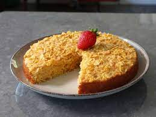

Cornflake corn cake

Description
Chef John's cornflake corn cake recipe makes a moister, sweeter version of cornbread using one
surprising ingredient—cornflakes. It really is a cake, with a texture that is just amazing.
Serve with fresh fruit or a fruit sauce.
Ingredients
- 1 teaspoon butter to grease pan
- 1 large egg
- 1/2 cup white sugar
- 6 tablespoons unsalted butter, melted
- 1/2 cup plain yogurt
- 1/2 cup milk
- 1/2 cup cornmeal
- 1 cup all-purpose flour
- 1 teaspoon salt
- 1 1/2 teaspoons baking powder
- 1/4 teaspoon baking soda
- 2 1/2 cups cornflakes, divided
Steps
- Preheat the oven to 400 degrees F (200 degrees C). Grease a 9-inch round cake pan
generously with 1 teaspoon butter, and place a circle of parchment in the bottom.
- Whisk egg and sugar together in a bowl until light and fluffy, about 1 minute.
Whisk in melted butter, yogurt, and milk until combined.
- Add cornmeal, flour, salt, baking powder, and baking soda to egg mixture; whisk
until dry ingredients are moistened. Fold in 2 cups of the cornflakes with a
spatula. Transfer batter to the prepared pan, and smooth the top.
- Scatter remaining 1/2 cup cornflakes evenly over the top; press in lightly with your fingers.
- Bake in the preheated oven until a skewer inserted near the center comes out clean,
about 25 minutes.
- Cool cake in the pan for 15 to 20 minutes before removing to a plate. Cool
completely before serving with fresh fruit or a fruit sauce.
back to homepage